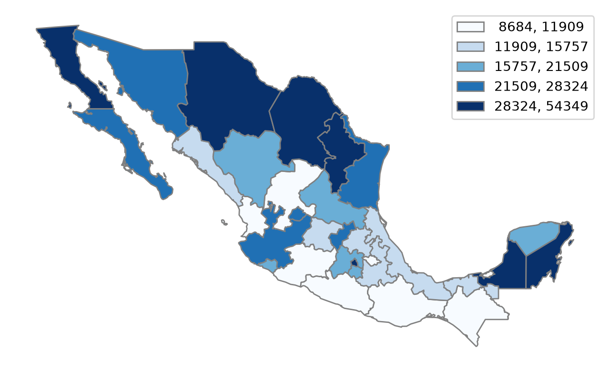

Random Regions¶
Authors: Serge Rey, James Gaboardi
Introduction¶
In this notebook we demonstrate how to use spopt with empirical and synthetic examples by:
Evaluating the properties of a predefined regionalization scheme.
Exploring the
max_swapsparameter on a simple lattice.
spopt offers functionality to generate random regions based on user-defined constraints. There are three optional parameters to constrain the regionalization: number of regions, cardinality, and contiguity. The default case simply takes a list of area IDs and randomly selects the number of regions and then allocates areas to each region. The user can also pass a vector of integers to the cardinality parameter to designate the number of areas to randomly assign to each region. The contiguity parameter takes a spatial weights object and uses that to ensure that each region is made up of spatially contiguous areas. When the contiguity constraint is enforced, it is possible to arrive at infeasible solutions; the maxiter parameter can be set to make multiple attempts to find a feasible solution.
We begin with importing the relevant packages:
%config InlineBackend.figure_format = "retina"
%load_ext watermark
%watermark
Last updated: 2026-11-18T16:32:24.581658+01:00
Python implementation: CPython
Python version : 3.14.10
IPython version : 9.18.1
Compiler : Clang 20.1.8
OS : Darwin
Release : 27.0.0
Machine : arm64
Processor : arm
CPU cores : 10
Architecture: 64bit
import warnings
import geopandas
import inequality
import libpysal
import matplotlib
import matplotlib.pyplot as plt
import numpy
import pandas
import seaborn
import spopt
from spopt.region import RandomRegion, RandomRegions
RANDOM_SEED = 12345
%watermark -w
%watermark -iv
Watermark: 2.6.0
geopandas : 1.2.0
inequality: 1.2.1.dev6+g51ea3e7af
libpysal : 4.15.1.dev15+g10abcb628
matplotlib: 3.11.2
numpy : 2.5.4
pandas : 3.1.1
seaborn : 0.13.2
spopt : 0.8.1.dev6+g356ab8d10.d20261118
1. Evaluating Regional Partitions: The case of Mexican state incomes¶
We will be using the built-in example data set mexico from the libpysal package. First, we get a high-level overview of the example:
libpysal.examples.explain("mexico")
mexico
======
Decennial per capita incomes of Mexican states 1940-2000
--------------------------------------------------------
* mexico.csv: attribute data. (n=32, k=13)
* mexico.gal: spatial weights in GAL format.
* mexicojoin.shp: Polygon shapefile. (n=32)
Data used in Rey, S.J. and M.L. Sastre Gutierrez. (2010) "Interregional inequality dynamics in Mexico." Spatial Economic Analysis, 5: 277-298.
mdf = geopandas.read_file(libpysal.examples.get_path("mexicojoin.shp"))
mdf.head()
| POLY_ID | AREA | CODE | NAME | PERIMETER | ACRES | HECTARES | PCGDP1940 | PCGDP1950 | PCGDP1960 | ... | GR9000 | LPCGDP40 | LPCGDP50 | LPCGDP60 | LPCGDP70 | LPCGDP80 | LPCGDP90 | LPCGDP00 | TEST | geometry | |
|---|---|---|---|---|---|---|---|---|---|---|---|---|---|---|---|---|---|---|---|---|---|
| 0 | 1 | 7.252751e+10 | MX02 | Baja California Norte | 2040312.385 | 1.792187e+07 | 7252751.376 | 22361.0 | 20977.0 | 17865.0 | ... | 0.05 | 4.35 | 4.32 | 4.25 | 4.40 | 4.47 | 4.43 | 4.48 | 1.0 | MULTIPOLYGON (((-113.13972 29.01778, -113.2405... |
| 1 | 2 | 7.225988e+10 | MX03 | Baja California Sur | 2912880.772 | 1.785573e+07 | 7225987.769 | 9573.0 | 16013.0 | 16707.0 | ... | 0.00 | 3.98 | 4.20 | 4.22 | 4.39 | 4.46 | 4.41 | 4.42 | 2.0 | MULTIPOLYGON (((-111.20612 25.80278, -111.2302... |
| 2 | 3 | 2.731957e+10 | MX18 | Nayarit | 1034770.341 | 6.750785e+06 | 2731956.859 | 4836.0 | 7515.0 | 7621.0 | ... | -0.05 | 3.68 | 3.88 | 3.88 | 4.04 | 4.13 | 4.11 | 4.06 | 3.0 | MULTIPOLYGON (((-106.62108 21.56531, -106.6475... |
| 3 | 4 | 7.961008e+10 | MX14 | Jalisco | 2324727.436 | 1.967200e+07 | 7961008.285 | 5309.0 | 8232.0 | 9953.0 | ... | 0.03 | 3.73 | 3.92 | 4.00 | 4.21 | 4.32 | 4.30 | 4.33 | 4.0 | POLYGON ((-101.5249 21.85664, -101.5883 21.772... |
| 4 | 5 | 5.467030e+09 | MX01 | Aguascalientes | 313895.530 | 1.350927e+06 | 546702.985 | 10384.0 | 6234.0 | 8714.0 | ... | 0.13 | 4.02 | 3.79 | 3.94 | 4.21 | 4.32 | 4.32 | 4.44 | 5.0 | POLYGON ((-101.8462 22.01176, -101.9653 21.883... |
5 rows × 35 columns
This data set records per capital Gross Domestic Product (PCGDP) for the decades 1940-2000 for 32 Mexican states.
mdf.columns
Index(['POLY_ID', 'AREA', 'CODE', 'NAME', 'PERIMETER', 'ACRES', 'HECTARES',
'PCGDP1940', 'PCGDP1950', 'PCGDP1960', 'PCGDP1970', 'PCGDP1980',
'PCGDP1990', 'PCGDP2000', 'HANSON03', 'HANSON98', 'ESQUIVEL99', 'INEGI',
'INEGI2', 'MAXP', 'GR4000', 'GR5000', 'GR6000', 'GR7000', 'GR8000',
'GR9000', 'LPCGDP40', 'LPCGDP50', 'LPCGDP60', 'LPCGDP70', 'LPCGDP80',
'LPCGDP90', 'LPCGDP00', 'TEST', 'geometry'],
dtype='str')
We can plot the spatial distribution of regional incomes in the last decade of the sample:
mdf.plot(
figsize=(8, 6),
column="PCGDP2000",
scheme="quantiles",
cmap="Blues",
edgecolor="grey",
legend=True,
legend_kwds={"fmt": "{:.0f}"},
).axis("off")
(np.float64(-118.64174423217773),
np.float64(-85.21563186645508),
np.float64(13.6420334815979),
np.float64(33.6293231010437))


Here we see the north-south divide in the Mexican space economy. This pattern has been the subject of much recent research, and a common methodological strategy in these studies is to partition the states into mutually exclusive and exhaustive regions. The motivation is similar to that in traditional clustering where one attempts to group like objects together. Here the regional sets should be composed of states that are more similar to other members of the same set, and distinct from those states in other sets.
Our dataset has a number of regionalization schemes from the published literature. Here we will focus on one HANSON03. We can plot this partition using a categorical scheme:
mdf.plot(figsize=(8, 6), column="HANSON03", categorical=True).axis("off");

Here the different colors symbolize membership in a different region. We can examine the cardinality structure of this partition:
cards = mdf.groupby(by="HANSON03").count().NAME.values.tolist()
cards
[6, 7, 10, 2, 3, 4]
Thus, we see there six regions (sets) of different sizes, the smallest region has only two states, while the largest (in a set-theory sense) has 10 states. We can explore the regional definitions in tabular form:
mdf[["NAME", "HANSON03", "PCGDP2000"]].sort_values(by="HANSON03")
| NAME | HANSON03 | PCGDP2000 | |
|---|---|---|---|
| 0 | Baja California Norte | 1.0 | 29855.0 |
| 29 | Nuevo Leon | 1.0 | 38672.0 |
| 24 | Coahuila De Zaragoza | 1.0 | 28460.0 |
| 23 | Chihuahua | 1.0 | 30735.0 |
| 22 | Sonora | 1.0 | 24068.0 |
| 30 | Tamaulipas | 1.0 | 23546.0 |
| 1 | Baja California Sur | 2.0 | 26103.0 |
| 2 | Nayarit | 2.0 | 11478.0 |
| 4 | Aguascalientes | 2.0 | 27782.0 |
| 28 | San Luis Potosi | 2.0 | 15866.0 |
| 27 | Zacatecas | 2.0 | 11130.0 |
| 26 | Durango | 2.0 | 17379.0 |
| 25 | Sinaloa | 2.0 | 15242.0 |
| 17 | Tlaxcala | 3.0 | 11701.0 |
| 15 | Puebla | 3.0 | 15685.0 |
| 31 | Veracruz-Llave | 3.0 | 12191.0 |
| 3 | Jalisco | 3.0 | 21610.0 |
| 12 | Morelos | 3.0 | 18170.0 |
| 5 | Guanajuato | 3.0 | 15585.0 |
| 6 | Queretaro de Arteaga | 3.0 | 26149.0 |
| 7 | Hidalgo | 3.0 | 12348.0 |
| 8 | Michoacan de Ocampo | 3.0 | 11838.0 |
| 11 | Colima | 3.0 | 21358.0 |
| 9 | Mexico | 4.0 | 16322.0 |
| 10 | Distrito Federal | 4.0 | 54349.0 |
| 21 | Chiapas | 5.0 | 8684.0 |
| 19 | Oaxaca | 5.0 | 9010.0 |
| 18 | Guerrero | 5.0 | 11820.0 |
| 20 | Tabasco | 6.0 | 13360.0 |
| 16 | Quintana Roo | 6.0 | 33442.0 |
| 14 | Campeche | 6.0 | 36163.0 |
| 13 | Yucatan | 6.0 | 17509.0 |
How good is HANSON03 as a partition?¶
One question we might ask about the partition, is how good of a job does it do at capturing the spatial distribution of incomes in Mexico? To answer this question, we are going to leverage the random regions functionality in spopt.
A random partition respecting cardinality constraints¶
We will first create a new random partition that has the same cardinality structure/distribution as the HANSON03 partition:
ids = mdf.index.values.tolist()
numpy.random.seed(RANDOM_SEED)
rrmx = RandomRegion(ids, num_regions=6, cardinality=cards)
This creates a new RandomRegion instance. One of its attributes is the definition of the regions in the partition:
rrmx.regions
[[np.int64(27),
np.int64(12),
np.int64(18),
np.int64(3),
np.int64(15),
np.int64(8)],
[np.int64(0),
np.int64(25),
np.int64(21),
np.int64(20),
np.int64(7),
np.int64(6),
np.int64(24)],
[np.int64(23),
np.int64(10),
np.int64(13),
np.int64(11),
np.int64(19),
np.int64(16),
np.int64(26),
np.int64(14),
np.int64(17),
np.int64(22)],
[np.int64(28), np.int64(31)],
[np.int64(30), np.int64(9), np.int64(4)],
[np.int64(1), np.int64(29), np.int64(5), np.int64(2)]]
This will have the same cardinality as the HANSON03 partition:
{len(region) for region in rrmx.regions} == set(cards)
True
A simple helper function let’s us attach the region labels for this new partition into the dataframe:
def region_labels(df, solution, name="labels_"):
n, k = df.shape
labels_ = numpy.zeros((n,), int)
for i, region in enumerate(solution.regions):
labels_[region] = i
df[name] = labels_
And, then we can visualize the new partition:
region_labels(mdf, rrmx, name="rrmx")
mdf.plot(figsize=(8, 6), column="rrmx", categorical=True).axis("off");

While the rrmx partition and the HANSON03 partitions have identical cardinality structures, their spatial distributions are radically different. The rrmx map looks nothing like the HANSON03 map.
One of the key differences is that the sets in the HANSON03 partition are each spatially connected components while this is not the case for the “regions” in the rrmx partition.
A random partition respecting cardinality and contiguity constraints¶
A second way to form a random partition is to add an additional constraint in the form of the spatial connectivity between the states. To do so, we will construct a spatial weights object using the Queen contiguity criterion:
with warnings.catch_warnings(record=True) as w:
w = libpysal.weights.Queen.from_dataframe(mdf)
and then add this as an additional parameter to instantiate a new RandomRegion:
numpy.random.seed(RANDOM_SEED)
rrmxc = RandomRegion(ids, num_regions=6, cardinality=cards, contiguity=w)
rrmxc.regions
[[np.int64(27), 5, 28, 8, 11, 24, 3, np.int64(4), np.int64(2), np.int64(29)],
[18, 19, 9, np.int64(21), np.int64(10), np.int64(12), np.int64(20)],
[np.int64(0), 22, 1, 25, 23, np.int64(26)],
[np.int64(13), 16, 14],
[np.int64(15), 17, 7, np.int64(6)],
[np.int64(31), 30]]
This will also have the same cardinality as the HANSON03 partition:
{len(region) for region in rrmxc.regions} == set(cards)
True
But, more importantly, we see the partition yields spatially connected components for the regions:
region_labels(mdf, rrmxc, name="rrmxc")
mdf.plot(figsize=(8, 6), column="rrmxc", categorical=True).axis("off");

Comparing Partitions¶
We now can get back to the question of how good the HANSON03 partition does in capturing the spatial structure of state incomes in Mexico. Two alternative random partitions have been constructed using RandomRegion and we can compare these with the HANSON03 partition:
f, axs = plt.subplots(1, 3, figsize=(12, 8))
ax1, ax2, ax3 = axs
mdf.plot(column="HANSON03", categorical=True, ax=ax1)
ax1.set_axis_off()
ax1.set_aspect("equal")
ax1.set_title("HANSON03")
mdf.plot(column="rrmx", categorical=True, ax=ax2)
ax2.set_axis_off()
ax2.set_aspect("equal")
ax2.set_title("Cardinality Constrained")
mdf.plot(column="rrmxc", categorical=True, ax=ax3)
ax3.set_axis_off()
ax3.set_aspect("equal")
ax3.set_title("Cardinality and Contiguity Constrained")
plt.subplots_adjust(wspace=-0.2);

In order to judge the HANSON03 regions against those from the two random solutions, we need some objective function to serve as our benchmark. Given the interest in the spatial distribution of incomes, we might ask if a partition has minimized the internal heterogeneity of the incomes for states belonging to each set?
We can use the PySAL inequality package to implement this measure:
Let’s focus on the last year in the sample and pull out the state incomes:
y = mdf.PCGDP2000
The TheilD statistic decomposes the inequality of the 32 state incomes into two parts:
inequality between states belonging to different regions (inequality between regions)
inequality between states belonging to the same region (inequality within regions)
We can calculate this for the original partition:
t_hanson = inequality.theil.TheilD(y, mdf.HANSON03)
The overall level of inequality is:
t_hanson.T
np.float64(0.10660832349588023)
which is decomposed into the “between-regions” component:
t_hanson.bg
array([0.05373534])
and the “within-regions” component:
t_hanson.wg
array([0.05287298])
For this partition, the two components are roughly equal. How does this compare to a random partition? Well, for a random partition with the same cardinality structure as HANSON03 we can carry out the same decomposition:
t_rrmx = inequality.theil.TheilD(y, mdf.rrmx)
The level of overall inequality will be the same:
t_rrmx.T
np.float64(0.10660832349588023)
However, the decomposition is very different now, with the within component being much larger than the between component.
t_rrmx.bg
array([0.02096667])
t_rrmx.wg
array([0.08564165])
How about when both cardinality and contiguity are taken into account when developing the random partition? We can pass in the partition definition for this solution into the decomposition:
t_rrmxc = inequality.theil.TheilD(y, mdf.rrmxc)
Again, the total inequality remains the same:
t_rrmxc.T
np.float64(0.10660832349588023)
and the within-region component is even larger than either the HANSON03 and rrmx partitions:
t_rrmxc.bg
array([0.01313884])
t_rrmxc.wg
array([0.09346949])
Generating a Reference Distribution¶
Both of the comparison partitions are examples of random partitions, subject to matching the cardinality (rrmx) or cardinality and contiguity constraints (rmxc). As such, the generated partitions should be viewed as samples from the population of all possible random partitions that also respect those constraints. Rather than relying on a single draw from each of these distributions, as we have done up to now, if we sample from these distributions, we can develop an empirical reference distribution to compare the original HANSON03 partition against. In other words, we can ask if the latter partition is performing any better than a random partition that respects the cardinality and contiguity constraints.
We can do this by adding in a permutations argument to the class RandomRegions. Note the plural here in that this class is intended to generate permutations solutions for the random regions that respect the relevant cardinality and contiguity constraints. We will generate permutations=99 solutions and calculate the inequality decomposition for each of the 99 partitions, extracting the wg component to develop the reference distribution
against which we can evaluate the observed wg value from the HANSON03 partition:
numpy.random.seed(RANDOM_SEED)
rrmxcs = RandomRegions(
ids, num_regions=6, cardinality=cards, contiguity=w, permutations=99
)
with warnings.catch_warnings():
warnings.simplefilter("ignore")
wg = []
for i, solution in enumerate(rrmxcs.solutions_feas):
name = f"rrmxc_{i}"
region_labels(mdf, solution, name=name)
wg.append(inequality.theil.TheilD(y, mdf[name]).wg)
wg = numpy.array(wg)
The mean of the within-region inequality component is:
wg.mean()
np.float64(0.08499903576350976)
which is larger than the observed value for HANSON03:
t_hanson.wg
array([0.05287298])
Examining the empirical distribution of the within-region inequality component for the random partitions:
rdf = pandas.DataFrame(data=wg, columns=["Within-region inequality"])
_ = seaborn.displot(
rdf, kind="kde", legend=False, x="Within-region inequality", rug=True
);

provides a more comprehensive benchmark for evaluating the HANSON03 partition. We see that the observed within-region component is extreme relative to what we would expect if the partitions were formed randomly subject to the
cardinality and contiguity constraints:
t_hanson.wg
array([0.05287298])
wg.min()
np.float64(0.052392123130697826)
We could even formalize this statement by developing a pseudo p-value for the observed component:
pvalue = (1 + (wg <= t_hanson.wg[0]).sum()) / 100
pvalue
np.float64(0.02)
which would lead us to conclude that the observed value is significantly different from what would be expected under a random region null.
So, yes,the HANSON03 partition does appear to be capturing the spatial pattern of incomes in Mexico in the sense that its larger within-region inequality component is not due to random chance.
2. Demonstrating the max_swaps parameter¶
Generate a 20 x 20 lattice in spenc with synthetic labels & plot.
hori, vert = 20, 20
n_polys = hori * vert
gdf = spopt.region.spenclib.utils.lattice(hori, vert)
numpy.random.seed(RANDOM_SEED)
gdf["synth_data"] = numpy.random.laplace(100, 10, n_polys)
gdf.head()
| geometry | synth_data | |
|---|---|---|
| 0 | POLYGON ((0 0, 1 0, 1 1, 0 1, 0 0)) | 119.606435 |
| 1 | POLYGON ((0 1, 1 1, 1 2, 0 2, 0 1)) | 95.423219 |
| 2 | POLYGON ((0 2, 1 2, 1 3, 0 3, 0 2)) | 89.998863 |
| 3 | POLYGON ((0 3, 1 3, 1 4, 0 4, 0 3)) | 91.062546 |
| 4 | POLYGON ((0 4, 1 4, 1 5, 0 5, 0 4)) | 101.455462 |
plt.rcParams["figure.figsize"] = [10, 10]
gdf.plot(
column="synth_data",
scheme="quantiles",
cmap="Blues",
edgecolor="grey",
legend=True,
legend_kwds={"fmt": "{:.2f}"},
);

Set the number of desired regions to 4.
n_regions = 4
Define IDs & set cardinality to 100 areas per region.
ids = gdf.index.values.tolist()
cards = [int(n_polys / n_regions)] * n_regions
cards
[100, 100, 100, 100]
Generate a RandomRegion instance (constraining only region count and cardinality) and plot.
numpy.random.seed(RANDOM_SEED)
rrlat = RandomRegion(ids, num_regions=n_regions, cardinality=cards)
region_labels(gdf, rrlat, name="rrlat")
gdf.plot(column="rrlat", cmap="tab20");

Create a Queen weights object to define spatial contiguity.
with warnings.catch_warnings(record=True) as w:
w = libpysal.weights.Queen.from_dataframe(gdf)
Iterate over max_swaps=[100, 350, 650, 999] for 4 RandomRegion instances.
for swaps in [100, 350, 650, 999]:
swap_str = f"rrlatms{swaps}"
numpy.random.seed(RANDOM_SEED)
result = RandomRegion(
ids,
num_regions=n_regions,
cardinality=cards,
contiguity=w,
compact=True,
max_swaps=swaps,
)
region_labels(gdf, result, name=swap_str)
Assign labels and titles, then plot.
labels = [
["synth_data", "rrlatms100", "rrlatms650"],
["rrlat", "rrlatms350", "rrlatms999"],
]
titles = [
["Data", "Max 100 Swaps", "Max 650 Swaps"],
["Unconstrained", "Max 350 Swaps", "Max 999 Swaps"],
]
rows, cols = 2, 3
f, axs = plt.subplots(rows, cols, figsize=(9, 7.5))
for i in range(rows):
for j in range(cols):
label, title = labels[i][j], titles[i][j]
_ax = axs[i, j]
if i == j and i == 0:
kws = {"scheme": "quantiles", "cmap": "Blues", "ec": "grey"}
gdf.plot(column=label, ax=_ax, **kws)
else:
gdf.plot(column=label, ax=_ax, cmap="tab20")
_ax.set_title(title)
_ax.set_axis_off()
_ax.set_aspect("equal")
plt.subplots_adjust(wspace=1, hspace=0.5)
plt.tight_layout()

As shown here, the results obtained from setting the maximum number of swaps clearly vary.